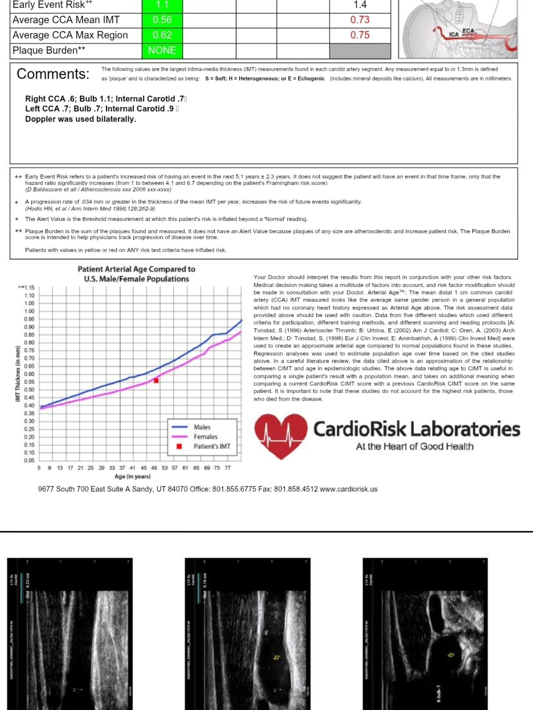
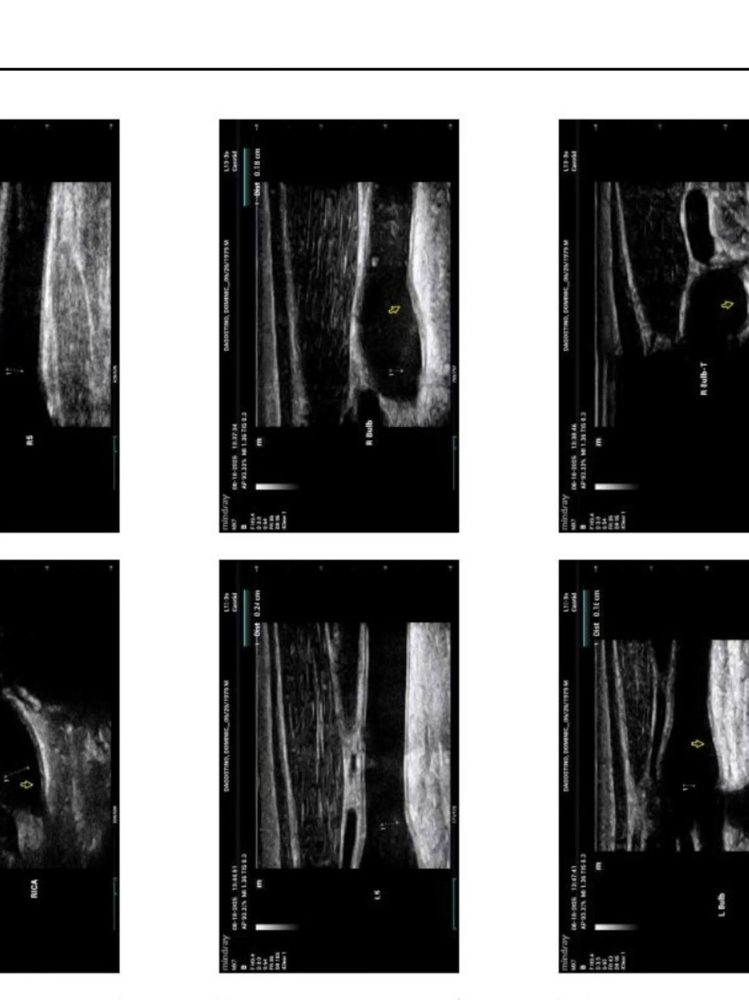

Doing keto, and not ignoring your markers can go hand in hand.
Detecting Early Signs of Atherosclerosis:
Staying ketogenic for the last 15 years lowered my blood pressure, triglycerides, HbA1C, insulin, and hsCRP (often nondetectable). This dietary pattern also skyrocketed my LDL and ApoB until adding ezetimibe (2 yrs ago). Since my decade of very high LDL/ApoB and stubbornly high Lp(a) may put me at risk, I scheduled a CLEERLY/CCTA but kept putting it off. Two weeks ago I opted to do a radiation-free carotid intima-media thickness (CIMT) test. If this detected any plaque I was going to follow up with my CCTA. CIMT detects the presence soft plaque and even calcified plaque but requires a highly trained and experienced person (coupled with AI analysis). When done correctly, it is sensitive in detecting early signs of atherosclerosis before calcium deposits form. My CIMT test was done by Dr. Lily Johnston, MD, MPH (vascular and endovascular surgeon). It also provided an estimated vascular age (34 yrs), which showed no atherosclerotic/plaque burden (yet). I will still do a CCTA but the CIMT provides a good baseline for follow up tests to monitor soft plaque.


